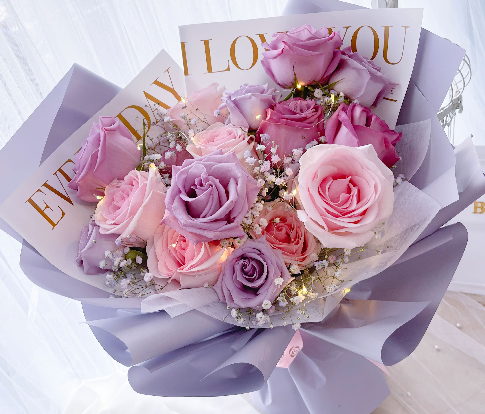

Solene Bouquets
Featured Bouquets
-
Pretty In Pink
A delicate blend of soft pink roses, tulips, and carnations, accented with lush greenery. This romantic bouquet exudes elegance and charm, perfect for any occasion that calls for a touch of grace and beauty.
$59.99
-
Winter Glow
Featuring rich red and white lilies, winter berries, and sprigs of pine, this bouquet captures the warmth and cozy spirit of the winter season. Ideal for the holidays or any winter celebration, it brings a touch of holiday magic to your home.
$69.99
-
Blushing Blossoms
A lovely combination of blush-colored peonies, roses, and ranunculus, blended with soft greens. This bouquet has a light, airy feel and is perfect for expressing gratitude, admiration, or love with its feminine charm.
$54.99
-
Sweet Serenity
With soft white lilies, lavender roses, and accents of baby's breath, this serene bouquet radiates tranquility and calm. The perfect gift for moments of reflection, relaxation, or to brighten someone's day with a peaceful, elegant touch.
$49.99
-
Garden Secrets
A garden-inspired arrangement with lush hydrangeas, dahlias, zinnias, and an assortment of garden greens. This bouquet is a vibrant mix of colors and textures, ideal for anyone who loves the beauty of a summer garden in full bloom.
$64.99
-
Peony Passion
A breathtaking bouquet of fragrant, full-bloom peonies, paired with soft pink roses and accents of eucalyptus. Luxurious and bursting with romance, this bouquet is perfect for a special occasion or to simply indulge in the passion of fresh, luxurious blooms.
$74.99
Single Variety Flowers
-
Roses
From deep reds to soft pinks, white to yellow, roses are perfect for expressing emotions, whether it's romantic love, appreciation, or friendship. Their elegant petals and delightful fragrance make them a classic choice for any occasion.
$39.99
-
Daffodils
With their vibrant yellow petals and trumpet-like shape, these flowers symbolize rebirth and renewal. Often associated with spring, daffodils bring a fresh burst of sunshine into any room, making them an uplifting choice for birthdays, celebrations, or simply to brighten someone's day.
$24.99
-
Lilies
Available in a range of colors, from pure white to deep orange and pink, lilies symbolize purity, renewal, and prosperity. Whether given as a gesture of sympathy, love, or gratitude, these stunning flowers will leave a lasting impression.
$34.99
-
Tulips
With their smooth, cup-shaped blooms in vibrant colors, tulips are a symbol of perfect love and prosperity. Whether in shades of red, pink, yellow, or purple, tulips bring a touch of spring and brightness to any bouquet.
$29.99
-
Hydrangeas
Their lush blooms, ranging in colors from soft pastels to deep blues and purples, add a touch of elegance to any space. Hydrangeas are perfect for weddings, anniversaries, or as a luxurious gesture of appreciation.
$34.99
-
Dahlias
With their intricate, multi-layered petals and vibrant colors, they symbolize strength, creativity, and elegance. From deep purples and reds to soft pinks and whites, dahlias make a statement in any arrangement.
$39.99
Classic Bouquets
-
Sunshine Yellow
Bursting with bright yellow lilies, daffodils, and sunflowers, Sunshine Yellow radiates warmth, joy, and positivity. This cheerful bouquet is perfect for bringing light to someone's day.
$49.99
-
Pastel Perfection
Soft and serene, Pastel Perfection is a delicate blend of pale pink roses, lavender lilies, and soft white peonies, complemented by light greenery. This soothing bouquet exudes elegance and grace.
$54.99
-
Autumn Haze
Autumn Haze is a warm, rich bouquet inspired by the colors of fall. Featuring deep orange roses, golden mums, and burgundy dahlias, this arrangement is accented by rustic greenery. A perfect tribute to the beauty of the autumn season, this bouquet brings warmth and coziness to any space.
$59.99
-
Tropical Breeze
A vibrant and exotic mix of bright orange, pink, and yellow lilies, orchids, and tropical greenery, Tropical Breeze brings a refreshing burst of energy to any room.
$64.99
-
Tulip Treasures
A beautiful mix of colorful tulips in shades of red, pink, yellow, and purple, Tulip Treasures captures the essence of springtime.
$49.99
-
Soft & Sweet
Features a lovely combination of pale pink roses, white daisies, and blush carnations, arranged with lush greenery. This bouquet is perfect for any sweet occasion, from baby showers to "just because" moments.
$44.99
Gift Sets
-
Romantic Gift Set
A bouquet of red roses paired with a box of premium chocolates.
$59.99
-
Birthday Surprise
A vibrant mixed bouquet with a small plush toy or greeting card.
$49.99
-
Celebration Package
Festive arrangement of colorful flowers with a bottle of champagne or sparkling cider.
$89.99
-
New Baby Bundle
Soft pastel-colored flowers with a baby onesie or a plush teddy bear.
$69.99
-
Get Well Soon Care Package
Cheerful flowers with a “Get Well Soon” card and soothing herbal tea.
$44.99
-
Housewarming Set
Fresh flowers in a decorative vase with a scented candle or home décor item.
$69.99